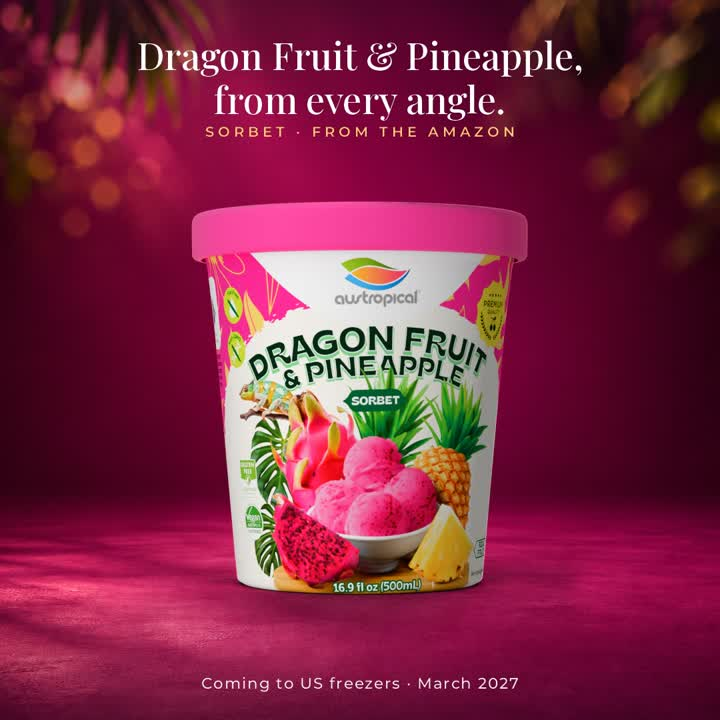
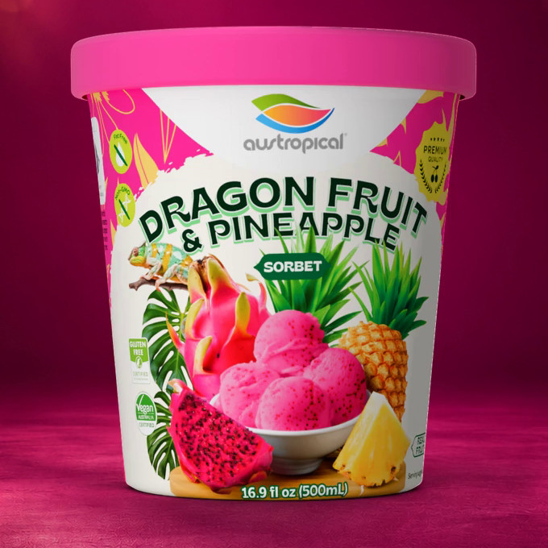

Dragon fruit sorbet with pineapple · 50% dragon fruit, 20% pineapple
Dragon Fruit & Pineapple
Dragon Fruit & Pineapple is a tropical fruit sorbet: 50% dragon fruit, 20% pineapple, cane sugar and filtered water, made in the Brazilian Amazon. The color is the fruit's. It is certified vegan (Vegan Australia) and kosher (Kosher Australia). Eat it as it is, or use it in smoothies, shakes and desserts.
- Certified vegan (Vegan Australia)
- Kosher (Kosher Australia)


Dragon fruit sorbet with pineapple: 50% dragon fruit, 20% pineapple
Formats
- 500 mL pint (16.9 fl oz). Paper tub, foil seal, paper lid. Twelve to a case.
- 250 mL Grab'n Go cup, wooden spoon included. One serving. Eighteen to a case.
- 10.2 kg foodservice bucket. About 69 servings at a 2/3 cup (147 g) scoop. Set up at Vistar, item TLL65273. The bowl program.
Certifications
- Certified vegan (Vegan Australia)
- Kosher (Kosher Australia)
Made in the Brazilian Amazon, in an FSSC 22000 certified facility. Pasteurized. Product of Brazil.
Ingredients
Dragon Fruit (50%), Pineapple (20%), Cane Sugar, Filtered Water, Stabilizers (Pectin, Guar Gum, Locust Bean Gum).
No allergen statement is printed or required for this product.
Nutrition Facts, per 2/3 cup (147 g)
| Calories | 120 |
|---|---|
| Total Fat | 0 g |
| Saturated Fat | 0 g |
| Sodium | 0 mg |
| Total Carbohydrate | 29 g |
| Dietary Fiber | less than 1 g |
| Total Sugars | 28 g |
| Added Sugars | 18 g |
| Protein | less than 1 g |
Declared per 2/3 cup (147 g) serving; about 69 servings per 10.2 kg bucket.
Storage
Keep frozen at 0 °F (−18 °C) or below. Do not let the product thaw and refreeze: temperature changes affect texture and shelf life. Keep the container tightly sealed and store it in the coldest part of the freezer, away from the door. The best-before date is on the container.
Shelf life: 24 months from manufacture, sealed and stored frozen.
Where to buy
Coming to US freezers · March 2027. Original Sensation and Mango arrive first; Dragon Fruit & Pineapple follows.
Where to buyBuyers and distributors
Pint, Grab'n Go cup and 10.2 kg bucket. Bucket item TLL65273 at Vistar. Live in GDSN.
Trade information